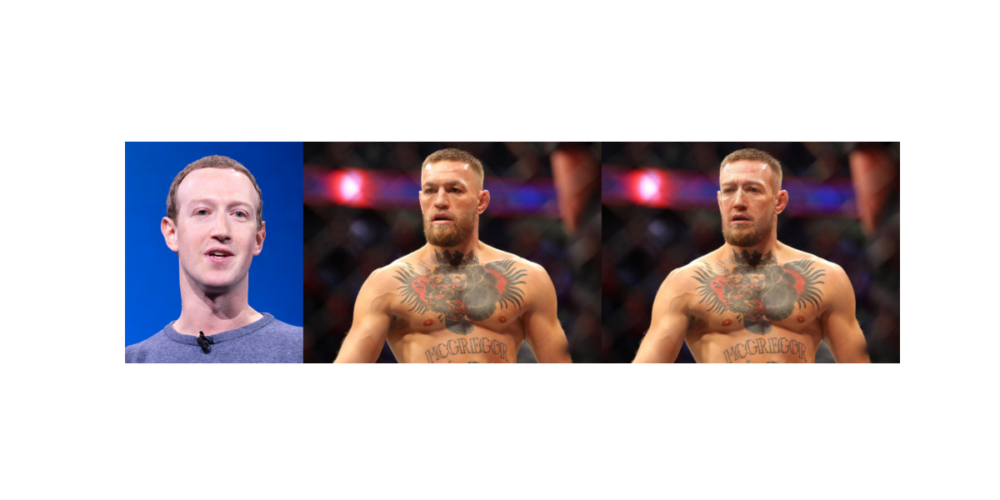
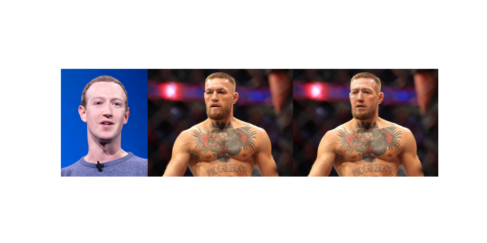

face–swapping: Swapping Faces on Target from given Sources
research and development work conducted at BHuman AI
by
Highlights
about the model!
In the realm of digital graphics processing and machine leanring, we've reached an unusual milestone with our latest work, called face-swapping This initiative stands as a indication to innovation, diverting from the conventional methods of source-driven or target-oriented in face swapping methodologies. Instead, wee've explored new areas by carefully making sure that the preservation of the source face's unique identity features, all while seamlessly assimilating critical attributes of target faces. These attributes encompass a spectrum of vairations, from gestures and postures to intricate lighting conditions.
What sets our endeavor apart is the attention to detail and profound understanding of both source and target facial characteristics. By delving deep into the complex layers of facial feature recognition and sophisticated image processing, we've emerged with the capability to maintain the integrity of facial identities, thereby revolutionizing the concept of digital impersonation. Moreover, our approach has significant implications in various sectors, including but not limited to entertainment, online social interaction, and opening new avenues for face-swapping applications. Whether it's reimagining historical figures in modern scenarios or enhancing online meeting experiences, the potential is boundless. Also our technique astoundingly negates the necessity for super-resolution models. We achieve this through a state-of-the-art process that highlight facial feature details, harnessing advanced learning algorithms to recreate high-resolution final result. This not only optimizes the computational efficiency but also enriches the visual quality, setting an industry benchmark.
what's more!
Our model takes face-swapping beyond still images, offering the remarkable ability to transform faces within videos. By simply providing the source images, you can seamlessly replace the faces in your video. Whether you want to swap a single identity or multiple characters, our system intelligently recognizes and applies each new face with precision. This feature opens up dynamic new possibilities for video editing, content creation, and personalized storytelling.
 

Developed on top of open source © Taneem Jan 2019–2023